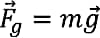

Elaborado por: Pedro Faustino Mingue Júnior
Fundamentação Teórica
Forças na Natureza
Força de gravidade
Da prática sabe-se que quando largamos qualquer corpo sobre a superfície de qualquer planeta, o corpo dirige-se em direcção a esta devido a atraccão gravitacional. Este movimento, tem a sua origem na atracção entre o corpo e o planeta devido as suas massas. Por isso:
A força de gravidade “Fg ”, é a força de atracção entre dois corpos devido a sua massa.
- Esta força é sempre vertical e de cima para baixo, veja nas figuras (a) e (b).
- Tem o seu ponto de aplicação no centro dos corpos.
- O seu módulo pode ser determinado pela expressão:

Força Peso
Quando nos sentamos, por exemplo, sobre uma cadeira, exercemos uma força sobre a cadeira. Por isso é que se a cadeira for frágil ela pode se quebrar. É o que acontece muitas vezes quando nos sentamos sobre uma cadeira de plástico, quando as suas pernas se vergam. Isto deve-se à força que exercemos sobre a cadeira quando nos sentamos. Esta força, é o nosso peso. Assim:
Peso de um corpo “P”, é a força que um corpo exerce sobre a superfície de apoio.
- Esta força é sempre perpendicular à superfície de apoio, veja nas figuras (a) e (b).
- Tem o seu ponto de aplicação na superfície de apoio do corpo.
Em (a) o módulo do peso do corpo é igual ao módulo da força de gravidade:
Em (b) o módulo do peso é igual ao módulo da componente da força de gravidade sobre o eixo Y (Fg y ).
De referir que um corpo suspenso não possui peso, porque não está apoiado sobre nenhuma superfície.
Força Normal ou Reação Normal
Da terceira lei de Newton sabe-se que para cada acção há sempre uma reacção igual e directamente oposta. Como sabe, quando um corpo está apoiado sobre uma superfície, ele exerce sobre esta, uma força que é chamada peso do corpo. Por isso, de acordo com a terceira lei de Newton, a superfície de apoio deve exercer sobre o corpo, uma força com o mesmo valor, mas de sentido contrário. Esta força é chamada força normal ou reacção normal. Resumindo:
Força Normal "N", é a força de reacção que uma determinada superfície exerce sobre o corpo que nela se encontra apoiado.
- Esta força é sempre perpendicular à superfície de apoio, e tem sempre sentido contrário ao peso do corpo, veja nas figuras (a) e (b).
- Tem o seu ponto de aplicação na superfície de apoio do corpo.
Em (a) o módulo da Força Normal é igual ao módulo da força de gravidade ou ao módulo do peso:
em (b) o módulo da Normal é igual ao módulo da componente da força de gravidade sobre o eixo Y (Fgy).
De referir que um corpo suspenso não possui Normal, porque não está apoiado sobre nenhuma superfície.
Força de Tensão
Quando suspendemos um corpo num fio, este estica-se, isto deve-se à força que o corpo exerce sobre o fio. E mais uma vez, o fio deve reagir com uma força igual à exercida pelo corpo mais de sentido contrário. A força exercida pelo fio é chamada Força de Tensão ou simplesmente Força Tensora. Assim:
Força de Tensão ou apenas Tensão “T”, é a força de reacção de um fio quando está sujeito à acção de uma força externa. Tem o seu ponto de aplicação nas extremidades do fio, veja na figura que se segue:
Força de Atrito
Da prática sabe-se que é fácil escorregar numa superfície lisa do que numa rugosa. Isto deve-se à força de atrito. Por isso:
A força de atrito "fa ", é a força que se opôe ao movimento dos corpo.
- Esta força é sempre paralela à superfície onde o corpo se move, e tem sempre sentido contrário ao sentido do movimento do corpo, veja nas figuras (a) e (b).
- Tem o seu ponto de aplicação na superfície de apoio do corpo.
A expressão para o seu cálculo é:
Onde “Fa” é a força de atrito; “N” é a força normal; “μ” é o coeficiente de atrito - que é uma grandeza adimensional (não tem unidade) e dá-nos a dificuldade que o corpo tem de se movimentar numa determinada superfície. Por exemplo, o coeficinte de atrito duma superfície de vidro é menor do que o de uma superfície de cimento.
Distingue-se ainda:
- O coeficiente de atrito estático “μe”, que é no caso de um corpo que está na eminência de entrar em movimento (quase a entrar em movimento).
- O coeficiente de atrito cinético “μc”, que é no caso de um corpo que está em movimento.
Você sabe por que existe o atrito de escorregamento? É muito fácil explicá-lo. As superfícies dos corpos, mesmo daqueles que têm uma aparência lisa, são na realidade irregulares. Quando vistas ao microscópio, as superfícies se apresentam cheias de saliências e reentrâncias. Assim, quando tentamos fazer deslizar um corpo sobre uma superfície, as saliências de uma das superfícies esbarram nas reentrâncias da outra, surgindo assim o atrito
Existem outras forças que não acho imperioso incluir, já que não iremos precisar de usar em nenhum dos casos em que pretendemos estudar. São exemplos dessas forças: Força Elástica e Força Centrípeta.